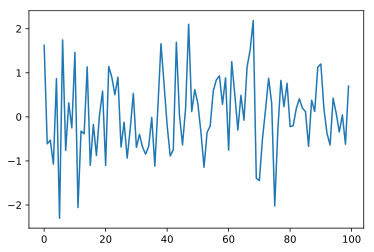

1. ipython与魔法命令
python语言的动态特性让它十分适合做科学计算,但原生的shell实在不给力,于是ipython应运而生,简单说ipython就是一个交互环境,但它确实的提高了码代码的效率,尤其与从他分离出去的jupyter notebook配合,可以实现程序,文档,演示的混合编辑.附带的宏命令机制魔法命令也是很好的补充,可以简单的实现一些单纯python要很麻烦才能实现的功能,与它的子项目ipyparallel配合更是可以简单实现多核并行运算,算是对cpython线程锁的一个弥补,它还支持内嵌Cython等扩展,非常强大.
本文主要讲它的使用和设置方法,以及魔法命令
1.1. 默认的魔法命令
魔法命令都以%或者%%开头,可以理解为ipython里定义的宏或者内置方法,以%开头的成为行命令，%%开头的称为单元命令。行命令只对命令所在的行有效，而单元命令则必须出现在单元的第一行，对整个单元的代码进行处理。
执行%lsmagic可以查看关于各个命令的说明，而在命令之后添加?可以查看该命令的详细说明。
%lsmagic
Available line magics:
%alias %alias_magic %autocall %automagic %autosave %bookmark %cat %cd %clear %colors %config %connect_info %cp %debug %dhist %dirs %doctest_mode %ed %edit %env %gui %hist %history %killbgscripts %ldir %less %lf %lk %ll %load %load_ext %loadpy %logoff %logon %logstart %logstate %logstop %ls %lsmagic %lx %macro %magic %man %matplotlib %mkdir %more %mv %notebook %page %pastebin %pdb %pdef %pdoc %pfile %pinfo %pinfo2 %popd %pprint %precision %profile %prun %psearch %psource %pushd %pwd %pycat %pylab %qtconsole %quickref %recall %rehashx %reload_ext %rep %rerun %reset %reset_selective %rm %rmdir %run %save %sc %set_env %store %sx %system %tb %time %timeit %unalias %unload_ext %who %who_ls %whos %xdel %xmode
Available cell magics:
%%! %%HTML %%SVG %%bash %%capture %%debug %%file %%html %%javascript %%js %%latex %%markdown %%perl %%prun %%pypy %%python %%python2 %%python3 %%ruby %%script %%sh %%svg %%sx %%system %%time %%timeit %%writefile
Automagic is ON, % prefix IS NOT needed for line magics.
1.1.1. 用!调用系统命令
ipython可以很方便的调用系统命令,只要用!就行
!ls
[31mcount_file0.txt[m[m
[31mcount_file1.txt[m[m
[31mcount_file2.txt[m[m
[31mcount_file3.txt[m[m
[31mcount_file4.txt[m[m
[31mcount_file5.txt[m[m
[31mcount_file6.txt[m[m
[31mcount_file7.txt[m[m
[31mcount_file8.txt[m[m
[31mcount_file9.txt[m[m
[31mipython_with_magic_command.ipynb[m[m
[1m[36mipython_with_magic_command_files[m[m
[31mmyfib.py[m[m
[31mmyfib.pyc[m[m
[31mnotebook格式转换工具.ipynb[m[m
[1m[36msource[m[m
[1m[36msrc[m[m
[31m在Ipython_Notebook中的代码调试与优化.ipynb[m[m
[31m基于web的可交互运行环境jupyter.ipynb[m[m
[31m多进程并行计算.ipynb[m[m
1.1.2. 有用的命令
%pwd
%pwd命令可以获取当前目录的信息
%pwd
'/Users/huangsizhe/WORKSPACE/Blog/Docs/Python/TutorialForJupyter/ipynbs'
%cd
%cd 可以跳转到目标目录,tab键可以补完
画图设置
%matplotlib inline
事实上这个命令是%matplotlib, inline是它的参数,这条命令的作用是指定%matplotlib输出图像的环境,最常用的就是inline,让它内嵌在notebook中显示,同时也可以有别的,比如 %matplotlib osx(注意看平台,像osx明显是mac专属,gtk需要windows下gtk环境,wx也需要wx环境),qt,tk,inline,notebook应该是可以放心使用的),一般inline足够好了
%matplotlib --list
Available matplotlib backends: ['tk', 'gtk', 'gtk3', 'wx', 'qt', 'qt4', 'qt5', 'osx', 'nbagg', 'notebook', 'agg', 'inline', 'ipympl']
%matplotlib inline
import pylab as pl
pl.seed(1)
data = pl.randn(100)
pl.plot(data);

可以配合 %config InlineBackend.figure_format="svg"做图片输出格式的设置
%config InlineBackend.figure_format="svg"
%matplotlib inline
pl.plot(data);

将cell的输出保存到对象
%%capture result
输出的内容会被以string的形式保存在stdout属性上
show()方法可以看到实际输出的内容
%%capture result
print([1,2,3])
result.stdout
'[1, 2, 3]\n'
result.show()
[1, 2, 3]
写入文件 %%writefile
%%writefile hello.py
#coding:utf-8
print("hello")
Overwriting hello.py
载入已有文件%load
# %load hello.py
print("hello")
hello
执行已有文件%run
%run hello.py
hello
<matplotlib.figure.Figure at 0x113c4f160>
1.2. *自定义魔法命令
ipython是允许自定义魔法命令的,而且也不复杂,我们看个例子,
from __future__ import print_function
from IPython.core.magic import (Magics, magics_class, line_magic,
cell_magic, line_cell_magic)
# The class MUST call this class decorator at creation time
@magics_class
class MyMagics(Magics):
@line_magic
def lmagic(self, line):
"my line magic"
print(line)
return line
@cell_magic
def cmagic(self, line, cell):
"my cell magic"
print(cell[:10])
return line, cell
@line_cell_magic
def lcmagic(self, line, cell=None):
"Magic that works both as %lcmagic and as %%lcmagic"
if cell is None:
print("Called as line magic")
return line
else:
print("Called as cell magic")
return line, cell
# In order to actually use these magics, you must register them with a
# running IPython. This code must be placed in a file that is loaded once
# IPython is up and running:
ip = get_ipython()
# You can register the class itself without instantiating it. IPython will
# call the default constructor on it.
ip.register_magics(MyMagics)
%lmagic 123
123
'123'
%%cmagic
1234
1234
1234
1234
1234
1234
('', '\n1234\n1234\n1234\n1234')
%%lcmagic 124
1234
Called as cell magic
('124', '\n1234')
我们可以把自己的魔法命令放在profile_default的startup文件夹下
1.2.1. 一个组实用的自定义魔法命令
下面是个比较实用的自定义魔法命令,它的主要作用是利用子进程调用其他python解释器执行python脚本.
%%writefile src/startup.py
#coding:utf-8
from __future__ import print_function
from IPython.core.magic import (Magics, magics_class, line_magic,
cell_magic, line_cell_magic)
from IPython.core.interactiveshell import InteractiveShell
from IPython.lib.pretty import pretty as _pretty
sh = InteractiveShell.instance()
def pretty(obj):
import numpy as np
if isinstance(obj, np.ndarray):
return np.array2string(obj, separator=", ")
else:
return _pretty(obj)
# The class MUST call this class decorator at creation time
@magics_class
class MyMagics(Magics):
@line_magic
def goodlook_list(self, line):
"""
%col number_of_column code
"""
pos = line.find(" ")
n = int(line[:pos])
code = line[pos+1:]
result = pretty(sh.ev(code)).split("\n")
max_width = max(len(line) for line in result) + 3
result = [line.ljust(max_width) for line in result]
result = "\n".join(["".join(result[i:i+n]) for i in xrange(0, len(result), n)])
print(result)
@line_magic
def exec_py2(self, line):
"""
pass all the arguments to a new python2 process
"""
import subprocess
cmd = "python " + line
subprocess.Popen(cmd, shell=True)
@line_magic
def exec_py3(self, line):
"""
pass all the arguments to a new python3 process
"""
import subprocess
cmd = "python3 " + line
subprocess.Popen(cmd, shell=True)
@line_magic
def exec_pypy(self, line):
"""
pass all the arguments to a new pypy process
"""
import subprocess
cmd = "pypy " + line
subprocess.Popen(cmd, shell=True)
ip = get_ipython()
# You can register the class itself without instantiating it. IPython will
# call the default constructor on it.
ip.register_magics(MyMagics)
Writing startup.py